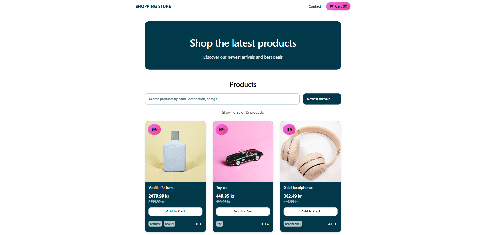

JavaScript Frameworks
Shopping Store

About the project
Shopping Store is an e-commerce web application developed for the JavaScript Frameworks course assignment using React, TypeScript, and Noroff Online Shop API.
The application allows users to browse products, search for items, view individual product details, add items to the cart, adjust quantities, and complete a checkout flow.
This was my first React project and gave me practical experience working with reusable components, routing, state management, API data, and TypeScript in a modern frontend application.
Key Features
- Product listing using API data
- Individual product detail page
- Product search functionality
- Shopping cart with quantity controls
- Checkout success page
- Contact form with validation
- Responsive layout
Portfolio Improvements
As part of Portfolio 2, I revisited the Shopping Store project to improve functionality, responsiveness, accessibility, and code quality based on feedback and my own evaluation.
The focus was on improving functionality, providing clear user feedback, and refining the overall user experience.
- Fixed the sale filter so that only discounted products are displayed.
- Added user-friendly error handling when products cannot be loaded.
- Added temporary confirmation feedback when adding products to the cart.
- Improved product reviews with visual star ratings and clearer separation between reviews.
- Added a shopping cart icon to the navigation.
- Updated the browser page title and improved layout stability
- Removed unused empty files from the project.
Technologies Used
- React
- TypeScript
- Vite
- React Router
- CSS modules
- Noroff Online Shop API